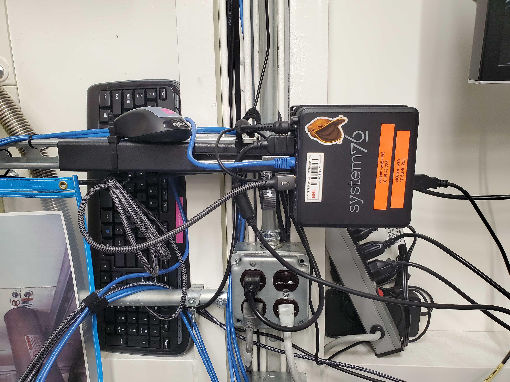
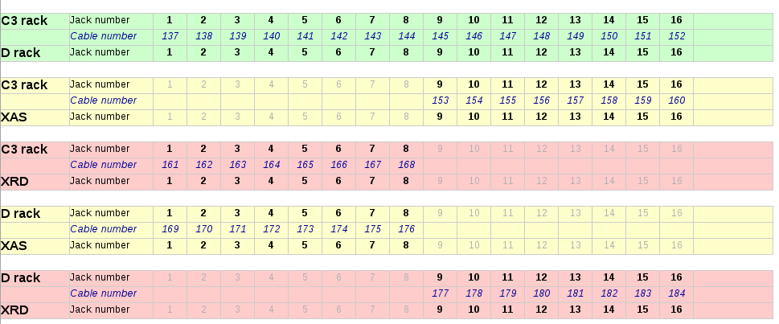
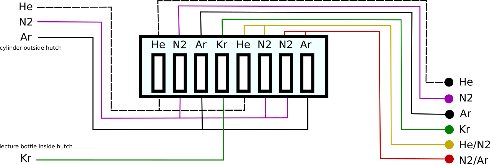
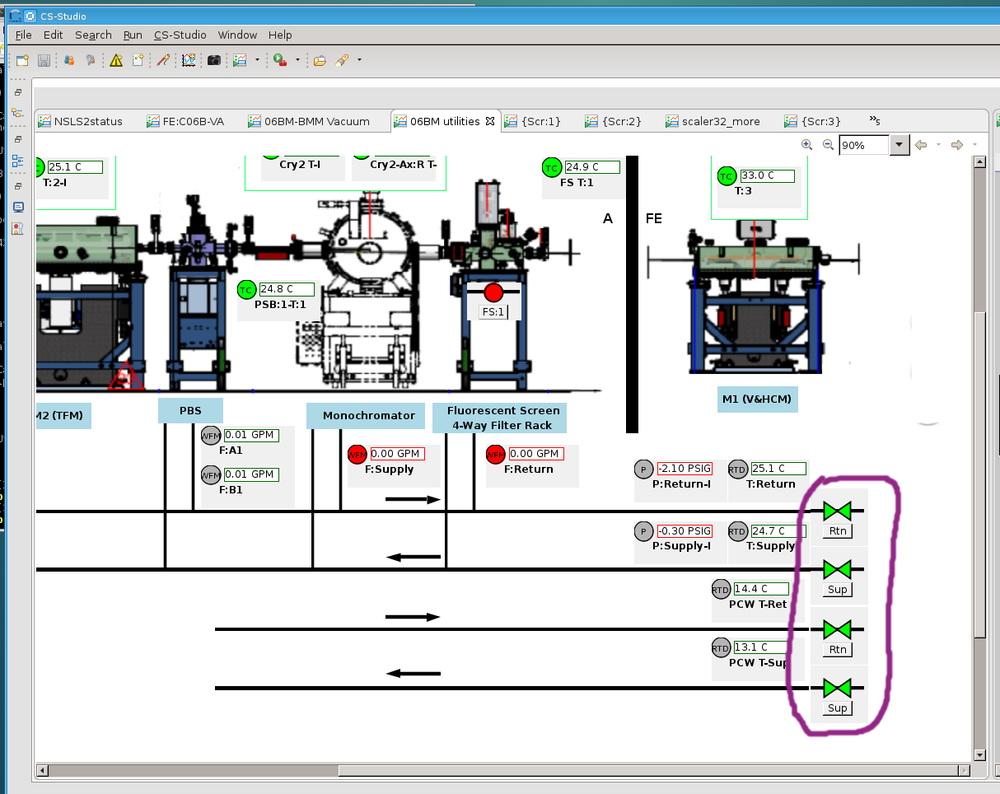
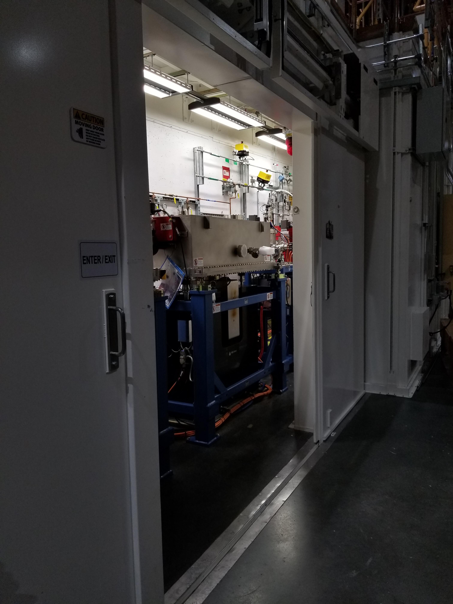
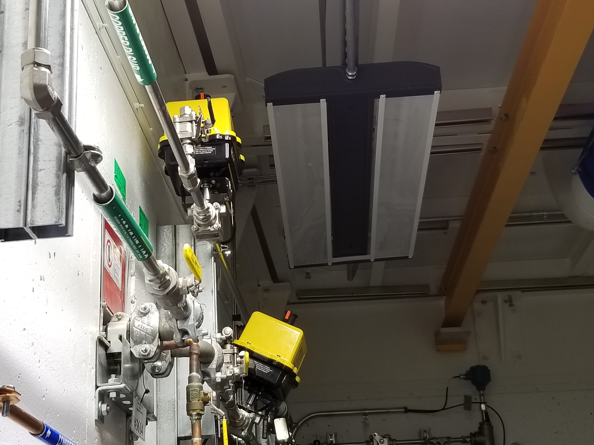
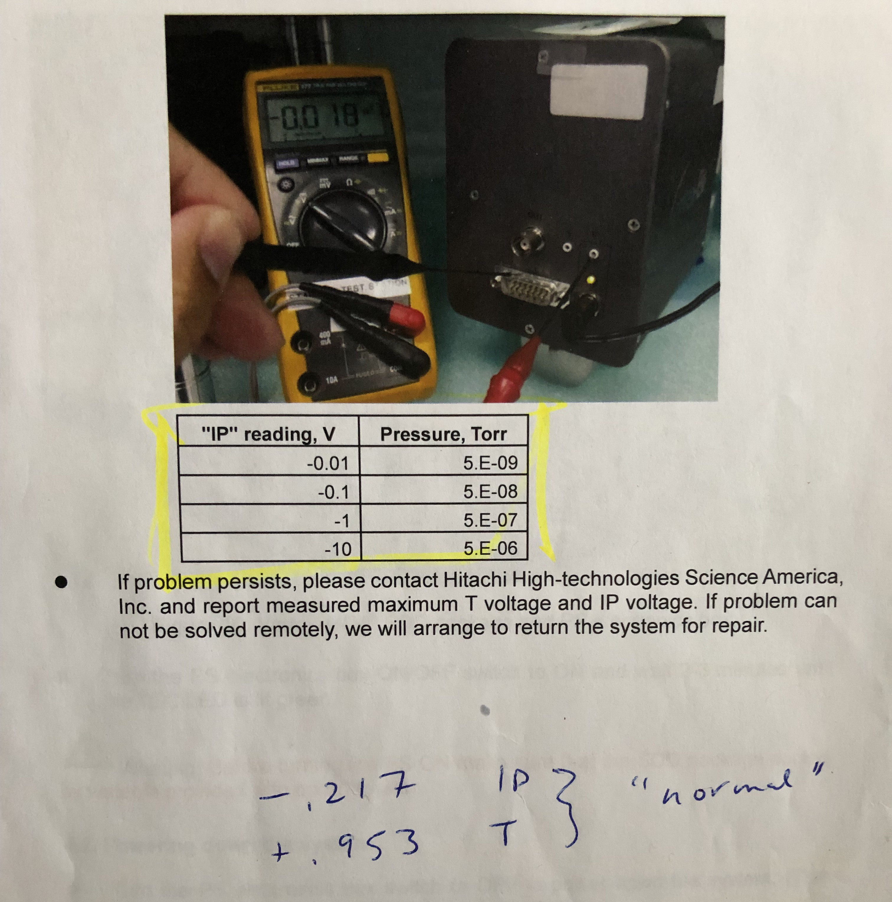
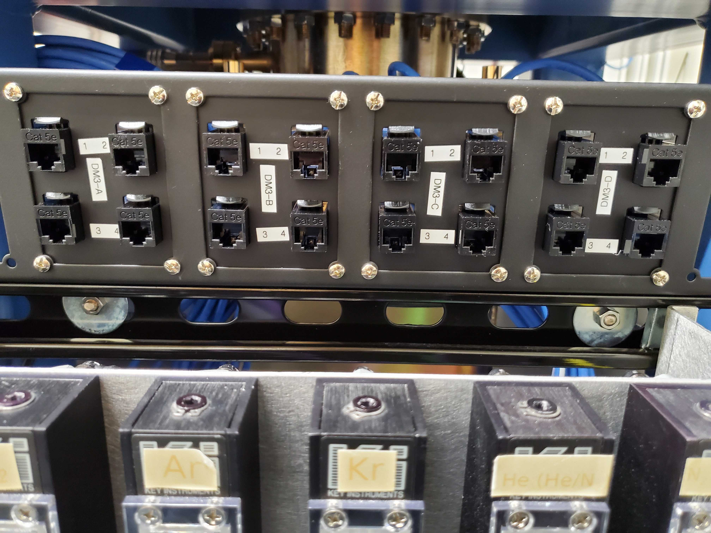
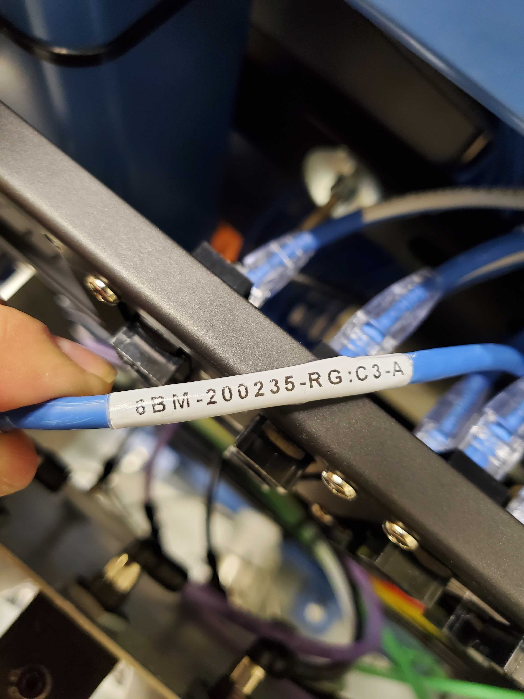
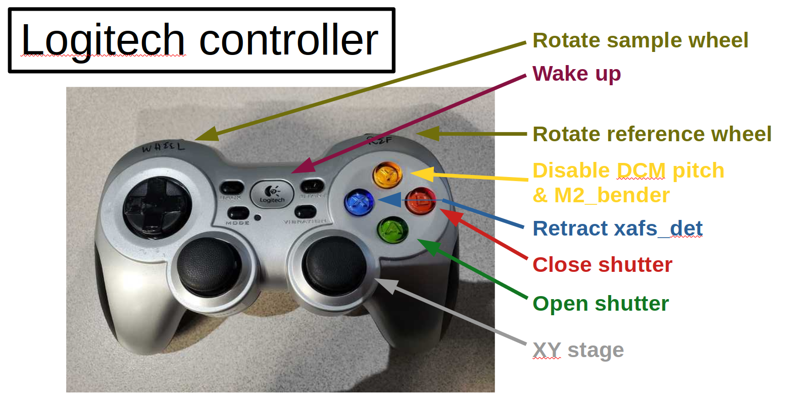

E. Instrumentation Details#
This section is a scattershot assortment of details about things at the beamline. This is basically an attempt to capture institutional knowledge … someplace.
E.1. xf06bm-ws5, in-hutch Zoom calls#
xf06bm-ws5 (10.68.40.225) is the System 76 Meerkat mounted on
the upstream wall of the end station. This machine is intended to
allow the users in the hutch to join a Zoom chat from within the
hutch. This helps Bruce provide user support from home.
{kind=link}

There are a number of peripherals attached to xf06bm-ws5:
A wireless mouse and keyboard clearly labeled as being for this computer. These are normally tucked away on the ledge formed by the panel seam on the upstream wall. I usually place these on the long table when I want to use them
A screen. This is the rather large screen mounted in the corner of the hutch. It can be moved around somewhat for better viewing.
A reasonably loud speaker. This is the Nylavee sitting on top of the DIODE box above the beampipe next to the teddy bear in soldier clothing.
A good microphone. This is the Blue Yeti on stand above the IT chamber on the XAS table. It has good noise cancellation so the din from the XSpress3 should not effect voice quality.
A decent camera. This is the Nexigo mounted overhead next to the Axis webcam.
While these devices are all connected to xf06bm-ws5 and powered
on, there are no long running processes that connect to the camera or
microphone. You are not being spied upon while in the hutch – unless
you are on a Zoom call, in which case the Zoom session will be on
screen.
xf06bm-ws5 is available via Guacamole. When needed for remote
support, Bruce will usually initiate the Zoom call and have the hutch
computer join in.
Note that the speaker is a Bluetooth speaker. It shows up as SK100 when you go into Settings and run a Bluetooth probe. The USB cable is for power only.
Note
To connect the speaker, select it in Settings then the volume button on the right end of the speaker must be pressed twice.
E.2. BNC Cable Map#
Here is an explanation of the BNC and SHV patch panels going between rack D at the control station, Rack C on the roof of the hutch, and the in-hutch patch panel.
{kind=link}

E.3. Inert Gas Plumbing#
Needle valves are mounted on the outboard side of DM3. Quick connect outlets for the gases are mounted on the upstream/inboard corner of the XAFS table.
{kind=link}

Vendor link for quick-disconnect fixture: https://www.mcmaster.com/5012K122/
In practice, the H2/N2 and N2/Ar mixing channels are not much used. Unless measuring with the incident beam below 5 keV or above 21 keV, it is a poor use of time to make changes to the gas content of the ion chambers. This is because it takes quite some time for the volume of the ion chamber to equillibrate.
N2 is adequate for almost all experiments at BMM.
E.4. Analog Video Capture#
Implementing this USB video adapter to capture video from the small analog cameras in the hutch took a bit of doing.
First, the adapter must be plugged directly into the computer. Using a USB hub makes for an unreliable interface to the camera.
Second, the file /etc/udev/rules.d/99-usb-camera-capture.rules is
needed to set permissions on /dev/video0 correctly when the adapter is
plugged in.
ACTION!="add|change", GOTO="webcam_capture_end"
SUBSYSTEM=="usb", ATTRS{idVendor}=="534d", ATTRS{idProduct}=="0021", MODE="0666"
KERNEL=="video*", ATTRS{idVendor}=="534d", ATTRS{idProduct}=="0021", GROUP="video", MODE="0666"
KERNEL=="video*", ATTRS{idVendor}=="534d", ATTRS{idProduct}=="0021", ATTRS{avoid_reset_quirk}=1
KERNEL=="video*", ATTRS{idVendor}=="534d", ATTRS{idProduct}=="0021", ATTRS{quirks}=0x100
LABEL="webcam_capture_end"
Putting this file in place will require assistance from DSSI. Beamline staff do not have permission to make a file in that folder. See this Jira ticket for an example of what to ask for.
This recognizes the vendor and product IDs of the specific adapter that I bought. When inserted, it sets the device to RW for all users and sets a couple of possibly relevant attributes. (This udev rules file was adapted from the rules file that comes with the easycap dc60 package – info and links here).
Next a small function was written as a wrapper around fswebcam to grab frames from the
camera. The function is basically a wrapper around a call to
fswebcam like so:
fswebcam -d /dev/video0 -r 640x480 -S 30 -F 5 foo.jpg
along with some image processing using python’s wand package.
Required packages:
fswebcampython-wandimagemagick
This whole setup is filled with quirk. There is a delay accessing the
video capture. The -S switch builds in a 1 second delay, giving the
capture device enough time to begin displaying the image. The -F
switch tells the script how many frames to accumulate for good signal.
5 is probably overkill.
In any case, it is now possible to grab screen shots of the currently displayed analog video while collecting data.
All of this is implemented in BMM/camera_device.py for use in
Bluesky. The heart of the implementation is a system call to
fswebcam. From there, the image is saved as an asset and correctly
pointed to in databroker. See:
E.5. Pilatus 100K#
Todo
Need to verify what’s on the wiki page.
E.6. DI Water Flow#
The DI water is controled by manual valves, which should only be operated by the utilities group, and by solenoid valves in the FOE. The solenoid valves are triggered by a water-sensing strip along the floor of the FOE. They are also actuated by switches on the CSS utilities screen. These toggles are the ones circled in pink inthe screenshot on the left.
The valves themselves are the large yellow and black boxes mounted high on the back wall of the FOE. The valve indicators are the rods with orange markings. When the valves are open, the orange marks are facing downstream. When closed, the orange marks are rotated towards the wall. Opening and closing those valves is managed through CSS. They must be open for the utilities group to do their work on the DI delivery to the mono and the filter assemblies.



Fig. E.1 (Left) The CSS utilities screen where the water valve controls are found. (Middle) A view into the FOE. (Right) The inboard wall where the physical valve is found.#
E.7. Disabling an MCS8 axis after a move#
E.7.1. From Adam Young at FMBO#
The motors can be disabled after a movement and this can be set at the
Delta Tau level.
First you will need to connect to each MCS8+ with the beamline laptop
and start PEWin.
Then please do the following:
+ Click on the 'View' menu at the top of the window. Then click
'Program/PLC Status (and upload)'.
+ Select PLC1 and click 'Upload'. An editor showing PLC1 will appear.
+ Scroll down to find the variables P105 to P805. The '1' to '8' part
of these variables represent axis 1 to 8 on the MCS8+. The value of
these variables determines whether or not the motors will be
disabled after a move. They are likely all set to '0' meaning power
stays on. The lateral motors are on axis 4 and 5 so P405 and P505
should be set to '1'.
+ Click on the yellow downwards pointing arrow on the toolbar in the
editor. This downloads the modified PLC1 from the editor to the
Delta Tau. Close the editor.
+ In the terminal window issue a 'save' to save the modified
configuration to the Delta Tau non-volatile memory and issue '$$$'
to refresh the controller.
E.7.2. A follow up from Graeme Elliner, FMBO#
Just done a fast scan of the config file and I think it is probably
because P302=1.
Px02 and Px05 (where x is the motor number) are special Pvars for
setting the final state of the motor once it has stopped moving, they
are used in PLC1x and set as you know in PLC1
If Px02=1 the PLC to check if the motor is in position and its
desired velocity is zero, if these two conditions are set a Flag is
set, If the conditions are still met 1second later then the motor
is put into OPEN LOOP. This means the motor is still enabled but
will ignore the encoder and the motor will hold its current rotary
location. This is useful for the motors that have DPTs pushing
against them in flexures (trapezoidal roll and pitch assy on the
DCMs), it gives a firm base for the DPT to push against but will
not try to hold position (as it would in closed loop) when the DPT
pushes the top part of the stage and moves the encoder. If Px05=1
then the PLC checks to see if the motor is in position and has zero
velocity, then 1second later it will kill that motor
Due to the way the code is ordered (it looks for thePx02 first) it
will enter Px02 check first, when the conditions are met it will
set the first Flag After that check it then see the Px05 check and
kills the motor. However on the next pass through the PLC it will
again enter the Px02 check, see that the first flag has been set
then trigger the open loop command, re-enabling the motor.
Hence by setting P302=0 in PLC1, it will not go into the check and
not accidentally enable the motor. If this does not fix it then
the issue is in EPICS
E.7.3. Conclusion#
The above suggestions were done for dm3_bct, a motor that was
showing the re-enable behavior. This made that motor tricky to
operate in bluesky. Setting P302=0 and P305=1 did the trick.
E.8. Vortex pressure#
Using a probe to measure the voltage on the IP port of the Vortex ME4. This reading will tell you the internal pressure according to the table in the snapshot below.
{kind=link}

IP reading (Voltage) |
Pressure |
|---|---|
-0.01 |
5E-9 |
-0.1 |
5E-8 |
-1 |
5E-7 |
-10 |
5E-6 |
Temperature reading should be 1.5 V when the TEC is at proper temperature.
Vortex SDD manual (link to copy at APS detector pool).
E.9. DM3 CAT6 Patch Panel#
13 more CAT6 ports for use in the hutch. Note that ports listed as SCI/EPICS are tagged ports on both subnets.
This is needed by workstations (like xf06bm-ws5), display machines
running CSS (like xf06bm-disp1), and machines running IOCs (like
xf06bm-xspress3).
Note that xf06bm-em1 needs to be on an INST port while the ion
chambers are on EPICS ports. The difference is that the ion chambers
are running their own on-board IOCs, making them more like IOC servers
than instruments.
Patch |
Port |
xf06bm-a port |
Network |
Role |
Cable number |
DM3-A |
1 |
44 |
EPICS |
xf06bm-ic1 |
200235 |
2 |
45 |
EPICS |
xf06bm-ic2 |
200236 |
|
3 |
46 |
EPICS |
xf06bm-ic3 |
200237 |
|
4 |
06bm-agg 36 |
INST |
xf06bm-em1 |
200238 |
|
DM3-B |
1 |
17 |
SCI/EPICS |
xf06bm-ws5 |
200239 |
2 |
18 |
SCI/EPICS |
xf06bm-disp1 |
200240 |
|
3 |
19 |
SCI/EPICS |
xf06bm-xspress3 |
200241 |
|
4 |
SCI/EPICS |
200242 |
|||
DM3-C |
1 |
200243 |
|||
2 |
200244 |
||||
3 |
200245 |
||||
4 |
200246 |
||||
DM3-D |
1 |
200247 |
|||
2 |
unused |
||||
3 |
unused |
||||
4 |
unused |
Some photos of the patch panel:


Fig. E.2 (Left) CAT6 patch panel at DM3. (Right) Lowest numbered label on the CAT6 cables in the DM3 patch panel#
E.10. Logitech controller#
{kind=link}

Todo
Explain how to configure buttons in CSS
E.11. Motor controllers#
This section is a big, long list of all the motor PV names at BMM.
Most motors have aliases. The alias is an alternate, easier-to-type name for the axis. These are equivalent:
caget XF:06BMA-OP{Mono:DCM1-Ax:Bragg}Mtr
caget xafs_bragg
Aliases work with most motor record fields, as well. The following are also equivalent:
caget XF:06BMA-OP{Mono:DCM1-Ax:Bragg}Mtr.VELO
caget xafs_bragg.VELO
The following tables give PV name and alias, a brief description of the purpose of the motor, the controller and location of that controller, and the channel number in the controller. A few abbreviations are used:
- us:
upstream
- ds:
downsteam
- ib:
inboard
- ob:
outboard
- para:
parallel
- perp:
perpendicular
E.11.1. Collimating mirror, M1#
PV |
alias |
Motor Description |
controller |
motor number |
|---|---|---|---|---|
XF:06BM-OP{Mir:M1-Ax:YU}Mtr |
m1_yu |
us jack |
MC01 (mezzanine) |
1 |
XF:06BM-OP{Mir:M1-Ax:YDO}Mtr |
m1_ydo |
ds, outboard jack |
MC01 (mezzanine) |
2 |
XF:06BM-OP{Mir:M1-Ax:YDI}Mtr |
m1_ydi |
ds, inboard jack |
MC01 (mezzanine) |
3 |
XF:06BM-OP{Mir:M1-Ax:XU}Mtr |
m1_xu |
us lateral |
MC01 (mezzanine) |
4 |
XF:06BM-OP{Mir:M1-Ax:XD}Mtr |
m1_xd |
ds lateral |
MC01 (mezzanine) |
5 |
E.11.2. Filters, DM1#
PV |
alias |
Motor Description |
controller |
motor number |
|---|---|---|---|---|
XF:06BMA-BI{Fltr:01-Ax:Y1}Mtr |
dm1_filters1 |
assembly #1 |
MC05 (RGA) |
6 |
XF:06BMA-BI{Fltr:01-Ax:Y2}Mtr |
dm1_filters2 |
assembly #2 |
MC05 (RGA) |
7 |
E.11.3. DCM#
PV |
alias |
Motor Description |
controller |
motor number |
|---|---|---|---|---|
XF:06BMA-OP{Mono:DCM1-Ax:Bragg}Mtr |
dcm_bragg |
DCM Bragg |
MC02 (RGA) |
1 |
XF:06BMA-OP{Mono:DCM1-Ax:Bragg2}Mtr |
dcm_bragg2 |
Bragg 2nd encoder |
MC02 (RGA) |
|
XF:06BMA-OP{Mono:DCM1-Ax:P2}Mtr |
dcm_pitch |
2nd xtal pitch |
MC02 (RGA) |
3 |
XF:06BMA-OP{Mono:DCM1-Ax:R2}Mtr |
dcm_roll |
2nd xtal roll |
MC02 (RGA) |
4 |
XF:06BMA-OP{Mono:DCM1-Ax:Per2}Mtr |
dcm_para |
2nd xtal perp |
MC02 (RGA) |
5 |
XF:06BMA-OP{Mono:DCM1-Ax:Par2}Mtr |
dcm_perp |
2nd xtal para |
MC02 (RGA) |
6 |
XF:06BMA-OP{Mono:DCM1-Ax:X}Mtr |
dcm_x |
lateral |
MC02 (RGA) |
7 |
XF:06BMA-OP{Mono:DCM1-Ax:Y}Mtr |
dcm_y |
vertical |
MC02 (RGA) |
8 |
E.11.4. Slits 2, DM2#
PV |
alias |
Motor Description |
controller |
motor number |
|---|---|---|---|---|
XF:06BMA-OP{Slt:01-Ax:O}Mtr |
dm2_slits_o |
outboard |
MC03 (RGA) |
1 |
XF:06BMA-OP{Slt:01-Ax:I}Mtr |
dm2_slits_i |
inboard |
MC03 (RGA) |
2 |
XF:06BMA-OP{Slt:01-Ax:T}Mtr |
dm2_slits_t |
top |
MC03 (RGA) |
3 |
XF:06BMA-OP{Slt:01-Ax:B}Mtr |
dm2_slits_b |
bottom |
MC03 (RGA) |
4 |
E.11.5. DM2 fluorescence screen#
PV |
alias |
Motor Description |
controller |
motor number |
|---|---|---|---|---|
XF:06BMA-BI{Diag:02-Ax:Y}Mtr |
dm2_fs |
vertical |
MC04 (RGA) |
7 |
E.11.6. Focusing mirror, M2#
PV |
alias |
Motor Description |
controller |
motor number |
|---|---|---|---|---|
XF:06BMA-OP{Mir:M2-Ax:YU}Mtr |
m2_yu |
us jack |
MC04 (RGA) |
1 |
XF:06BMA-OP{Mir:M2-Ax:YDO}Mtr |
m2_ydo |
ds, outboard jack |
MC04 (RGA) |
2 |
XF:06BMA-OP{Mir:M2-Ax:YDI}Mtr |
m2_ydi |
ds, inboard jack |
MC04 (RGA) |
3 |
XF:06BMA-OP{Mir:M2-Ax:XU}Mtr |
m2_xu |
us lateral |
MC04 (RGA) |
4 |
XF:06BMA-OP{Mir:M2-Ax:XD}Mtr |
m2_xd |
ds lateral |
MC04 (RGA) |
5 |
XF:06BMA-OP{Mir:M2-Ax:Bend}Mtr |
m2_bender |
bender |
MC04 (RGA) |
6 |
E.11.7. Harmonic rejection mirror, M3#
PV |
alias |
Motor Description |
controller |
motor number |
|---|---|---|---|---|
XF:06BMA-OP{Mir:M3-Ax:YU}Mtr |
m3_yu |
us jack |
MC05 (RGA) |
1 |
XF:06BMA-OP{Mir:M3-Ax:YDO}Mtr |
m3_ydo |
ds, outboard jack |
MC05 (RGA) |
2 |
XF:06BMA-OP{Mir:M3-Ax:YDI}Mtr |
m3_ydi |
ds, inboard jack |
MC05 (RGA) |
3 |
XF:06BMA-OP{Mir:M3-Ax:XU}Mtr |
m3_xu |
us lateral |
MC05 (RGA) |
4 |
XF:06BMA-OP{Mir:M3-Ax:XD}Mtr |
m3_xd |
ds lateral |
MC05 (RGA) |
5 |
E.11.8. Slits 3, DM3#
PV |
alias |
Motor Description |
controller |
motor number |
|---|---|---|---|---|
XF:06BM-BI{Slt:02-Ax:O}Mtr |
dm3_slits_o |
outboard |
MC06 (RGC1) |
5 |
XF:06BM-BI{Slt:02-Ax:I}Mtr |
dm3_slits_i |
inboard |
MC06 (RGC1) |
6 |
XF:06BM-BI{Slt:02-Ax:T}Mtr |
dm3_slits_t |
top |
MC06 (RGC1) |
7 |
XF:06BM-BI{Slt:02-Ax:B}Mtr |
dm3_slits_b |
bottom |
MC06 (RGC1) |
8 |
E.11.9. DM3#
PV |
alias |
Motor Description |
controller |
motor number |
|---|---|---|---|---|
XF:06BM-BI{FS:03-Ax:Y}Mtr |
dm3_fs |
fluorescent screen |
MC06 (RGC1) |
1 |
XF:06BM-BI{Fltr:01-Ax:Y}Mtr |
dm3_foils |
foils actuator |
MC06 (RGC1) |
4 |
XF:06BM-BI{BCT-Ax:Y}Mtr |
dm3_bct |
vertical stage |
MC06 (RGC1) |
3 |
XF:06BM-BI{BPM:1-Ax:Y}Mtr |
dm3_bpm |
NanoBPM |
MC06 (RGC1) |
2 |
E.11.10. XAFS Table#
PV |
alias |
Motor Description |
controller |
motor number |
|---|---|---|---|---|
XF:06BMA-BI{XAFS-Ax:Tbl_YU}Mtr |
xafs_yu |
xafs table y us |
MC07 (RGC1) |
1 |
XF:06BMA-BI{XAFS-Ax:Tbl_YDO}Mtr |
xafs_ydo |
xafs table y ds ob |
MC07 (RGC1) |
2 |
XF:06BMA-BI{XAFS-Ax:Tbl_YDI}Mtr |
xafs_ydi |
xafs table y ds ib |
MC07 (RGC1) |
3 |
XF:06BMA-BI{XAFS-Ax:Tbl_XU}Mtr |
xafs_xu |
xafs table x us |
MC07 (RGC1) |
4 |
XF:06BMA-BI{XAFS-Ax:Tbl_XD}Mtr |
xafs_xd |
xafs table x ds |
MC07 (RGC1) |
5 |
E.11.11. XAFS Stages#
Todo
This table needs attention
PV |
alias |
Motor Description |
controller |
motor number |
|---|---|---|---|---|
XF:06BMA-BI{XAFS-Ax:LinY}Mtr |
xafs_liny |
xafs sample y |
MC08 (RGC1) |
1 |
XF:06BMA-BI{XAFS-Ax:LinX}Mtr |
xafs_linx |
xafs sample x |
MC08 (RGC1) |
2 |
XF:06BMA-BI{XAFS-Ax:LinS}Mtr |
xafs_lins |
xafs sample small |
MC08 (RGC1) |
3 |
XF:06BMA-BI{XAFS-Ax:LinXS}Mtr |
xafs_linxs |
xafs reference |
MC08 (RGC1) |
4 |
XF:06BMA-BI{XAFS-Ax:Pitch}Mtr |
xafs_pitch |
xafs pitch stage |
MC08 (RGC1) |
5 |
XF:06BMA-BI{XAFS-Ax:Roll}Mtr |
xafs_roll |
xafs tilt stage |
MC08 (RGC1) |
6 |
. |
. |
xafs reference wheel |
MC08 (RGC1) |
7 |
. |
. |
glancing rotation |
MC08 (RGC1) |
8 |
XF:06BMA-BI{XAFS-Ax:Tbl_RotH}Mtr |
xafs_roth |
xafs Huber |
MC07 (RGC1) |
6 |
XF:06BMA-BI{XAFS-Ax:Tbl_RotB}Mtr |
xafs_rotb |
xafs black rot stage |
MC07 (RGC1) |
7 |
XF:06BMA-BI{XAFS-Ax:Tbl_RotS}Mtr |
xafs_rots |
xafs small rot stage |
MC07 (RGC1) |
8 |
E.11.12. Gonimeter circles#
PV |
alias |
Motor Description |
controller |
motor number |
|---|---|---|---|---|
XF:06BM-ES{SixC-Ax:VTTH}Mtr |
6bm:sixc_vtth |
Vertical two theta |
MC11 (RGC2) |
1 |
XF:06BM-ES{SixC-Ax:VTH}Mtr |
6bm:sixc_vth |
Vertical theta |
MC11 (RGC2) |
2 |
XF:06BM-ES{SixC-Ax:CHI}Mtr |
6bm:sixc_chi |
Chi |
MC11 (RGC2) |
3 |
XF:06BM-ES{SixC-Ax:PHI}Mtr |
6bm:sixc_phi |
Phi |
MC11 (RGC2) |
4 |
XF:06BM-ES{SixC-Ax:HTH}Mtr |
6bm:sixc_hth |
Horizontal theta |
MC11 (RGC2) |
5 |
XF:06BM-ES{SixC-Ax:HTTH}Mtr |
6bm:sixc_htth |
Horizontal two theta |
MC11 (RGC2) |
6 |
XF:06BM-ES{SixC-Ax:ANAL}Mtr |
6bm:sixc_anal |
Analyzer |
MC11 (RGC2) |
7 |
XF:06BM-ES{SixC-Ax:DET}Mtr |
6bm:sixc_det |
Detector |
MC11 (RGC2) |
8 |
E.11.13. Goniometer motors#
PV |
alias |
Motor Description |
controller |
motor number |
|---|---|---|---|---|
XF:06BM-ES{SixC-Ax:DETHOR}Mtr |
6bm:sixc_det_h |
det horiz |
MC12 (RGC2) |
1 |
XF:06BM-ES{SixC-Ax:WHEEL1}Mtr |
6bm:sixc_wh1 |
wheel 1 |
MC12 (RGC2) |
2 |
XF:06BM-ES{SixC-Ax:WHEEL2}Mtr |
6bm:sixc_wh2 |
wheel 2 |
MC12 (RGC2) |
3 |
XF:06BM-ES{SixC-Ax:SAMX}Mtr |
6bm:sixc_samx |
sample X |
MC12 (RGC2) |
4 |
XF:06BM-ES{SixC-Ax:SAMY}Mtr |
6bm:sixc_samy |
sample Y |
MC12 (RGC2) |
5 |
XF:06BM-ES{SixC-Ax:SAMZ}Mtr |
6bm:sixc_samz |
sample Z |
MC12 (RGC2) |
6 |
XF:06BM-ES{SixC-Ax:Tbl_YD}Mtr |
6bm:sixc_tyd |
table Y ds |
MC12 (RGC2) |
7 |
XF:06BM-ES{SixC-Ax:Tbl_YUI}Mtr |
6bm:sixc_tyui |
table Y us ib |
MC12 (RGC2) |
8 |
E.11.14. Goniometer table#
PV |
alias |
Motor Description |
controller |
motor number |
|---|---|---|---|---|
XF:06BM-ES{SixC-Ax:Tbl_YUO}Mtr |
6bm:sixc_tyuo |
table Y us ob |
MC13 (RGC2) |
1 |
XF:06BM-ES{SixC-Ax:Tbl_XU}Mtr |
6bm:sixc_txu |
table X us |
MC13 (RGC2) |
2 |
XF:06BM-ES{SixC-Ax:Tbl_XD}Mtr |
6bm:sixc_txd |
table X ds |
MC13 (RGC2) |
3 |
XF:06BM-ES{SixC-Ax:Tbl_Z}Mtr |
6bm:sixc_tz |
table Z |
MC13 (RGC2) |
4 |
XF:06BM-ES{SixC-Ax:Slt1_T}Mtr |
6bm:sixc_slt1_t |
top slit |
MC13 (RGC2) |
5 |
XF:06BM-ES{SixC-Ax:Slt1_B}Mtr |
6bm:sixc_slt1_b |
bottom slit |
MC13 (RGC2) |
6 |
XF:06BM-ES{SixC-Ax:Slt1_I}Mtr |
6bm:sixc_slt1_i |
inboard slit |
MC13 (RGC2) |
7 |
XF:06BM-ES{SixC-Ax:Slt1_O}Mtr |
6bm:sixc_slt1_o |
outboard slit |
MC13 (RGC2) |
8 |
E.11.15. Shutters and screen#
PV |
alias |
Motor Description |
controller |
motor number |
|---|---|---|---|---|
XF:06BM-PPS{Sh:FE}Pos-Sts |
front end shutter |
PPS |
||
XF:06BM-PPS{Sh:A}Pos-Sts |
A hutch shutter |
PPS |
||
XF:06BMA-OP{FS:1}Pos-Sts |
fluorescent screen |
EPS |
E.11.16. Front-end slits#
PV |
alias |
Motor Description |
controller |
motor number |
|---|---|---|---|---|
FE:C06B-OP{Slt:12-Ax:X}size |
horizontal size |
geobrick (mezzanine) |
virtual |
|
FE:C06B-OP{Slt:12-Ax:X}center |
horizontal center |
geobrick (mezzanine) |
virtual |
|
FE:C06B-OP{Slt:12-Ax:Y}size |
vertical size |
geobrick (mezzanine) |
virtual |
|
FE:C06B-OP{Slt:12-Ax:Y}center |
vertical center |
geobrick (mezzanine) |
virtual |
|
FE:C06B-OP{Slt:1-Ax:Hrz}Mtr |
Slit 1 horizontal |
geobrick (mezzanine) |
||
FE:C06B-OP{Slt:1-Ax:Inc}Mtr |
Slit 1 incline |
geobrick (mezzanine) |
||
FE:C06B-OP{Slt:1-Ax:O}Mtr |
Slit 1 X outboard |
geobrick (mezzanine) |
||
FE:C06B-OP{Slt:1-Ax:T}Mtr |
Slit 1 Y top |
geobrick (mezzanine) |
||
FE:C06B-OP{Slt:2-Ax:Hrz}Mtr |
Slit 2 horizontal |
geobrick (mezzanine) |
||
FE:C06B-OP{Slt:2-Ax:Inc}Mtr |
Slit 2 incline |
geobrick (mezzanine) |
||
FE:C06B-OP{Slt:2-Ax:I}Mtr |
Slit 2 X inboard |
geobrick (mezzanine) |
||
FE:C06B-OP{Slt:2-Ax:B}Mtr |
Slit 2 Y bottom |
geobrick (mezzanine) |
E.12. Encoder loss second crystal roll#
On 9 January, 2018, when attempting to home the mono motors following the schduled power outage in December, the 2nd crystal roll motor moved to its negative limit, then reported an encoder loss. With Graeme Elliner’s (an FMB-O controls engineer) help, I came to a resolution of the problem. It has left that axis in an unusual state that needs to be documented.
Executive summary: that axis does not use its encoder. It homes by running to its negative limit, then running back to it’s home position. It does this by counting controller pulses rather than encoder
Here are a couple of useful emails from Graeme to me from January 11 and 12, 2018.
Hi Bruce
We now need to work out where the problem is.
NOTE you will not be able to drive anything while you're doing this or you potentially can break more.
1: Unplug the Disable Plug from the back of the DCM (this will
force all motors to be disabled) - it’s the small black connector
(bottom right as you look at the back)
2: Disconnect PL102 & SK102 from IF2
3: Disconnect PL103 & SK103 from IF3
4: Connect PL103 & SK103 to IF2
5: Connect PL102 & SK102 to IF3
IF the Red light on the Interpolator stayed with IF3 then there is
a problem with Interpolator - Need to put motor into Open Loop
IF the Red light on the Interpolator has moved to IF2 then the
Interpolator is fine and it is cabling somewhere - GOTO STEP 6
6: SWAP PL102 and PL103
IF the red light has moved back to IF3 then the problem is between
PL103 to the read head on the Xtal2 Roll stage - GOTO STEP 7
IF the red light has stayed with IF2 then the problem is between SK103 to the MCS8
This cabling is Pin to Pin so a simple continuity test on each pin should identify what has broken
7: SWAP SK102 and SK103. The cabling should now be back to the original layout
8: SWAP SK203-2 and SK203-3 at the feedthroughs on the DCM (FD3-2 & FD3-3 respectively)
IF the red light has moved to IF2 then the problem is INSIDE the
DCM vessel - Need to put motor into Open Loop (and ultimately open
the vessel to find it)
If the red light has stayed on IF3 then there is a problem with the
cable to the DCM. This cable is should be Pin to Pin so a simple
continuity test on each pin should identify what has broken
To Put the Roll Axis into Open Loop
Have you got PeWin working now??
Using Pewin backup the config for the DCM and send it to me please.
A lot of the cable swapping Graeme called for was to try to isolate a bad connection. The connection between read-head and motor controller is rather lengthy, with a vacuum feedthrough, a feedtrough on the side of the service box, and two connections to the interpolators inside the service box.
Following the steps laid out by Graeme, I isolated the problem to being inside the vacuum vessel. Drat! Using the old MC02 configuration I saved to a file, Graeme made some edits as described below and sent me a new configuration file.
Hi Bruce
I have modified the config file to now not use the encoder for
position feedback. I have tested that it downloads with no errors
Details of the mods are listed at the top of the file and below, I
have marked all modifications with either GRE+ (for added code) or
GRE- (for commented code)
In PLC1
P446=0 this disables encoder loss detection for axis4
In the Ivars
I430=700 changed to default stepper gain for no encoder
I432=0 changed to default value for no encoder
I7040=8 this forces the system to use steps for feedback
Use restore config from the backup menu in PEWin to install this
CHECK that the box at the bottom reports NO ERRORS,
in the terminal window you will need to "SAVE" and "$$$".
You will now find that the position scaling will be completely
different now that you are not using the encoder. This means that
your jog speeds will also be different
I strongly suggest NOT trying to use EPICS imediately.
Use the PeWin terminal (or the Jog Ribbon) to move axis 4 to the -ve
limit ("#4j-") at the -ve limit type "#4HMZ" to zero the postion
display and then to the +ve limit ("#4j+").
This will tell you how many steps there are between the limits.
Using this info and the data for the encoded version you should be
able to move th axis to approximately the correct location.
I have noticed that in PLC14 (the homing PLC for axis 4) that even
when the axis was using the encoder the home routine was not using
the encoder home refernce.
It is moving to the -ve limit then moving off 51926 encoder counts,
then setting this to be HOME - search for GRE*** in the file.
This will not be correct now the system is using steps and might
actually be more than you have measured as the range in steps.
You will need to change this value before you can use EPICS to home the axis.
Once all this is working in PeWin you can test the homing routine
by entering M1416=1 in the Pewin terminal.
Following this set of instructions, I found that there are 1,218,299 steps between the two limits on the 2nd crystal roll motor. It would seem that there are about 10 or 12 steps per encoder count. The homing procedure works in the sense of finding the negative limit, then moving to a home position. But that home position seems to be about 1/10 of the way between the negative limit and the home-using-encoder-counts.